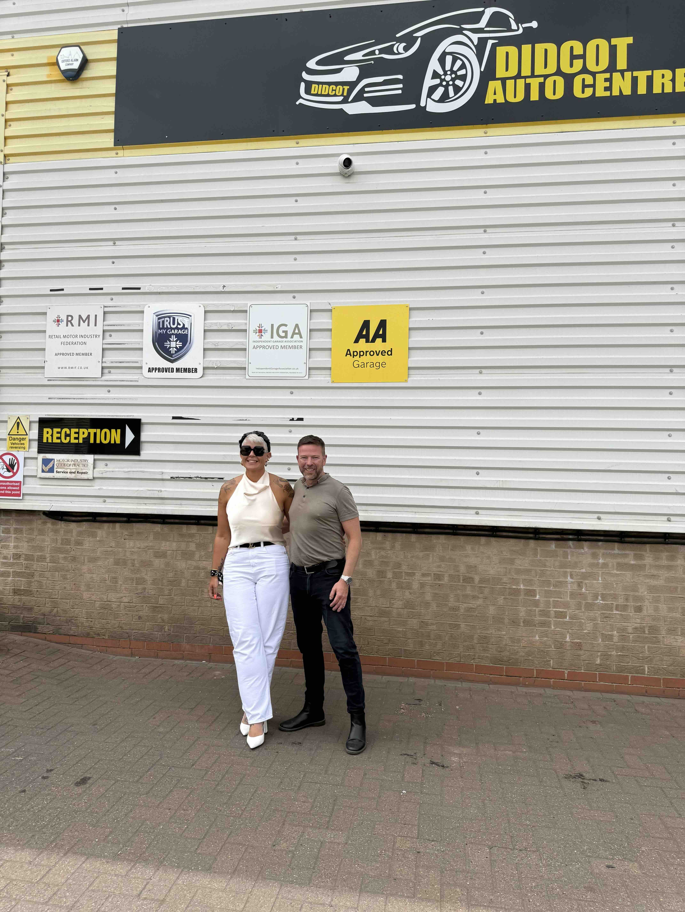
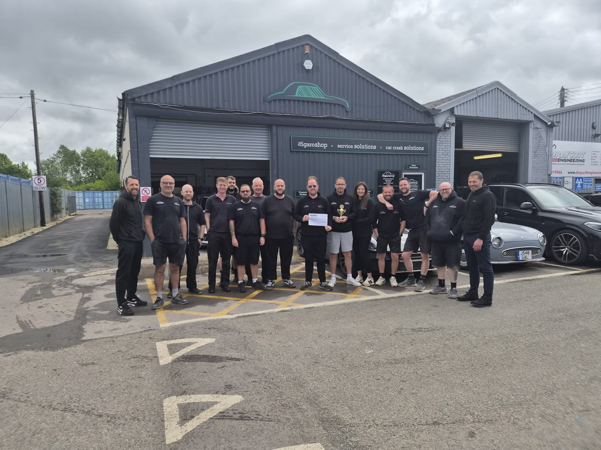
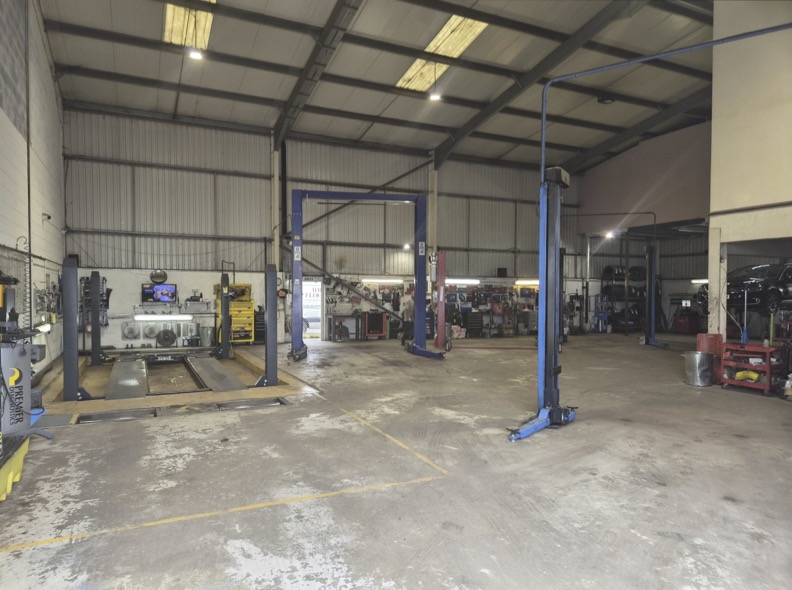
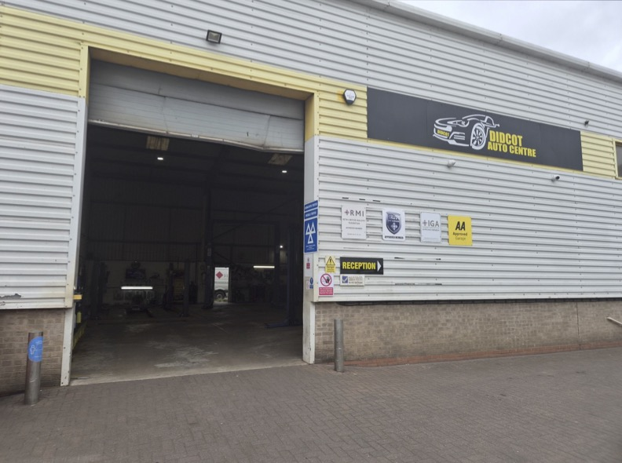

Thank you from Tobyn
Hi everyone,
I hope you're all getting the chance to enjoy some of the summer sunshine. I wanted to send you some updates and let you know I am very grateful for everything you do.
Welcome to Didcot Auto Centre
This month we welcomed Jo and the Didcot Auto Centre team to the Best Autocentres Group.
I'd like to extend a warm welcome to everyone joining us. I would also like to thank all those across the group who have worked hard behind the scenes to make the transition as smooth as possible. Bringing great people together is how we continue to build a stronger business.
Figaro Shop — Monthly Performance Trophy Winners
Congratulations to The Figaro Shop for winning this month's performance trophy and the £250 prize. A fantastic achievement and well deserved recognition for a strong all-round performance in what was a very tough month generally.
Garage Hive — A Major Step Forward
The rollout of Garage Hive across the group has been a huge effort.
Thank you to everyone who has been involved in the implementation. I know that introducing new systems can disrupt normal routines. Your patience, flexibility, and commitment have been outstanding.
This is an important investment in our future. The best businesses use the best technology, and Garage Hive will help us become more efficient and become better at looking after our customers. There is a still a way to go but if we keep working at it we will see the results.
Technology like this is a key part of our ambition to build the best autocentres in the country.
Thank you again for everything you do.
Tobyn
The wall, spot your branch, and our winners



